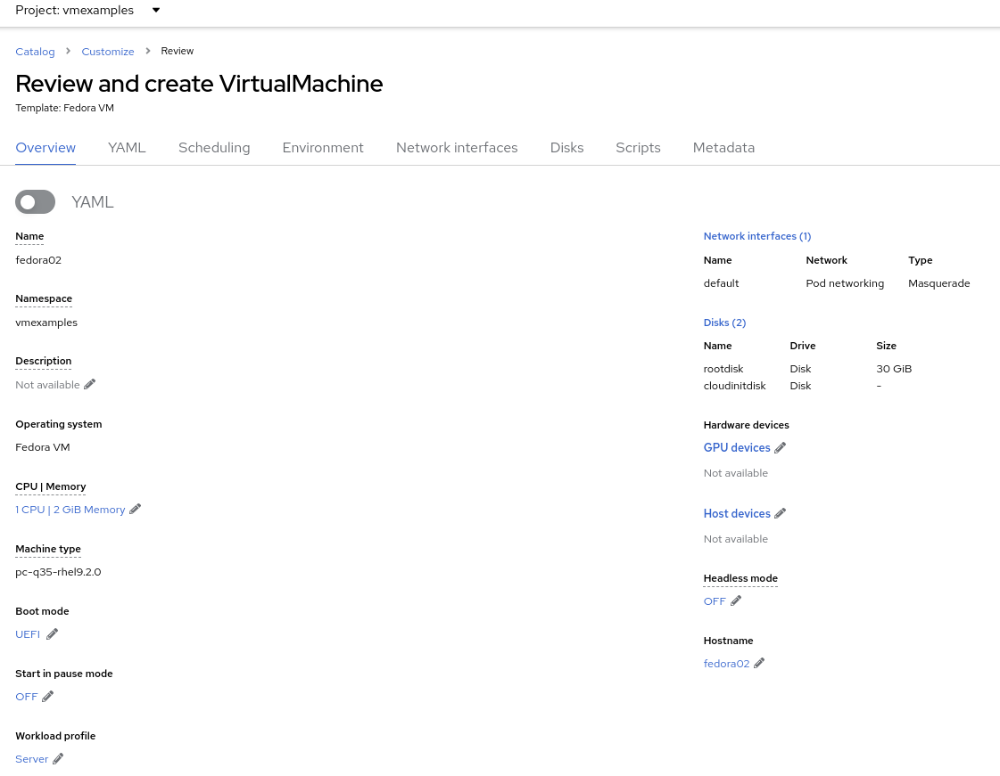
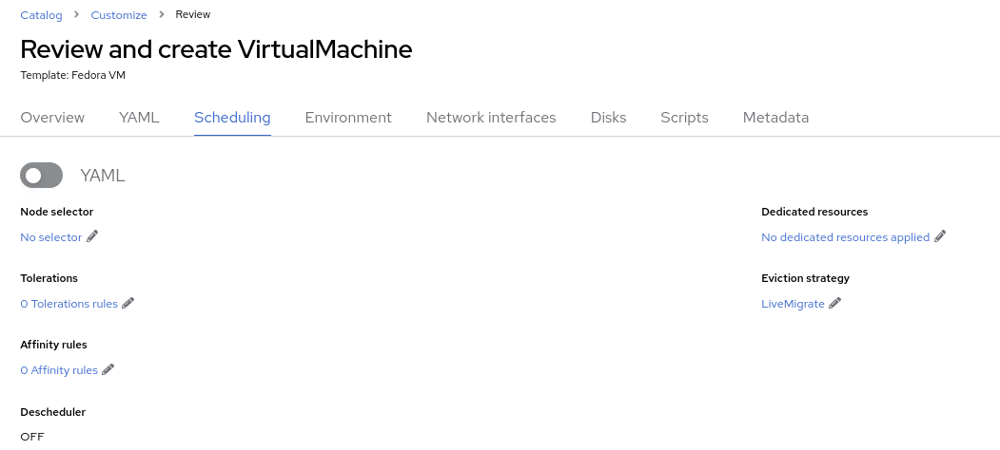
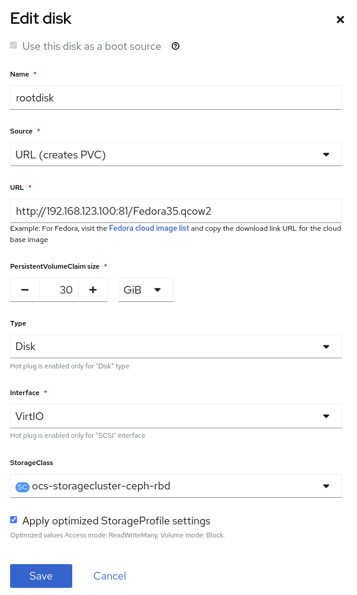

Optional: Customize Virtual Machines
In this lab, we will customize a virtual machine at creation, including using a customized template disk hosted on an external web server, setting resource properties, and specifying the password configured by cloud-init.
-
Create VM from a QCOW2 image
-
Customize a VM using the Create Virtual Machine wizard
|
Important
|
This section will customize a virtual machine at creation time, however if you’re interested in modifying virtual machine configuration after creation, the same procedure and dialogs apply to existing virtual machines. However, not all resources can be modified while the VM is powered on, i.e. "hot add/remove". Refer to the documentation for details about each resource type and whether it can be modified while the VM is running. Alternatively, the user interface will notify you if the VM needs to be restarted for a change to take effect. |
1. Customizing a virtual machine at creation
You have already created a Fedora VM in the previous lab. This time you will customize the VM with a few different settings - for example, you will set a custom password for the fedora user.
|
Note
|
The fedora user is the default user configured by the Fedora Cloud image used in this workshop. Templates created and used by your organization may use a different username or might use cloud-init or SysPrep to automatically join the guest operating system to an identity provider.
|
-
In the left menu, go back to Virtualization → VirtualMachines:
NoteIf you do not see the VMs created on the previous page, double-check to make sure you’re looking at the vmexamplesproject in the upper left corner of the panel. -
In the top right dropdown, select Create → From template:

-
From the pre-defined templates, select the Fedora VM tile:
-
In the dialog that opens, click Customize VirtualMachine.
-
Customize Virtual Machine
Even though this template has a disk already available, we want to import a different disk from the external web server. This is one option for deploying VMs from a library of disks, though it may be slower than relying on the storage provider to offload a PVC clone for the disk. The QCOW2 disk image used here could also be imported to a PVC and used as a source disk for VM clones. See the documentation for more details on how to do this.
-
Specify the name
fedora02 -
Under Storage section
-
Disk source:
URL (creates PVC) -
Disk size: 30 GiB
-

+ Press Next
-
-
Review the Overview tab with the default configuration from the template
 -
Click the link under CPU | Memory to adjust the resource allocation for the virtual machine. Change the number of CPUs to 2 and the memory to 4 GiB.
-
Navigate to the Scheduling tab and review the options available without modifying them
-
A node selector is used to specify one or more cluster nodes that the VM is allowed to run on. These can be selected by name, label, or annotation.
-
Tolerations are used when a cluster node has a taint applied. Taints are an indicator that only specific workloads, those with a toleration for the taint, should be allowed to run on the node. They are helpful when you have, for example, some nodes that have GPUs where you only want VMs that use a GPU to run on those nodes.
-
An affinity rule is used to indicate that a VM should be scheduled with, or not with in the case of an anti-affinity rule, other workloads.
-
The dedicated resources function is used when you want to, for example, assign a PCIe device to the virtual machine or allocate specific CPU cores to the VM.
-
By default, all VMs will use the Live Migrate eviction strategy, which means that when a node is cordoned and drained for maintenance purposes, such as applying updates, the VM will be non-disruptively migrated to a different node. Alternatively, VMs can be configured to shutdown and do a cold migration or simply not migrate at all.
-
The descheduler is a feature of OpenShift that will periodically evaluate the VM and the host it’s running on to determine if it should be migrated to another host. This could be for resource optimization reasons or because an affinity rule is being violated.
-
-
Navigate to the Network interfaces tab and notice by default, a Virtual Machine is connected to the
Pod networking(which is just OpenShift internal networking). -
Click the three vertical dots icon to edit
default, and review the default options:-
The model indicates the type of network adapter that will be used. VirtIO is the paravirtual NIC, whereas e1000 and others are emulated devices.
-
Network is greyed out because there are no other networks available. In a future module of this workshop, we’ll add an additional network for the VMs and use it.
-
Type indicates how the VM should be connected to the network. For the SDN, or Pod networking, this is set to
Masquerade. For a VLAN network theBridgesetting is used. -
For a newly created NIC, you have the option of customizing the MAC address assigned to it. It’s greyed out here because we’re editing an already created NIC.
Since there are no other networks avaialble at this time, press Cancel to exit the dialog.
NoteIf you would like to add/manage networks for virtual machines and see how to connect a virtual machine to a layer 2 (VLAN) network, choose the optional Network Management module from the workshop navigation menu.
-
-
Navigate to the Disks tab to see the devices allocated to the VM.

It is possible to add new and modify the default disks before creating the VM. You can also modify the storage class and the boot source — for example, to boot from an ISO — and you can define the disk interface instead of using the default
virtiointerface. -
Click the three vertical dots icon to edit
rootdisk, and review the default options:-
The PersistentVolumeClaim Size will be the size of the disk attached to the VM. If the source of the disk is another PVC, it cannot be smaller than the source, otherwise, you want to make sure it is at least large enough to hold the QCOW2 or ISO that is being imported.
-
The type of the disk can be changed to be, for example, a CD-ROM device.
-
Each disk connects to the VM using an interface. The
VirtIOinterface is the KVM paravirtualized interface type. -
The StorageClass indicates the type of storage that is backing the VM disk. This will be different for each storage provider, and some storage providers can have multiple storage classes representing different features, performance, and other capabilities.
-
Optimized StorageProfile Settings indicate to use the clone strategy and volume mode indicated for the storage type. These are provided by Red Hat for many CSI providers, but can also be customized for your use cases.
NoteIf you would like to learn more about virtual machine storage, choose the optional Storage Management module from the workshop navigation menu.
-
-
Navigate to the Scripts tab. This tab is used to apply guest OS customization, such as cloud-init or Sysprep, at deployment time.

-
cloud-init can be configured using the GUI dialog or using a standard YAML script for more advanced configuration. In the next step, we’ll customize this information
-
An Authorized SSH key may, optionally, be provided to allow one or more users to connect to the VM without a password. This SSH key can be stored as a
Secretand automatically applied to new Linux VMs if desired. -
Sysprep is the Microsoft Windows tool for automatically configuring new OS deployments, including setting configurations like hostname, default
Administratorpasswords, and joining an Active Directory domain.NoteIf you want to learn more about how to customize and deploy Windows virtual machines, choose the optional Windows Virtual Machines module from the workshop navigation menu.
-
-
Since this is a Fedora VM, press Edit in the Cloud-init section to specify the password
ocpVirtIsGre@tfor the userfedora. Click Apply when done.Notice that we can also specify network configuration information here by checking the appropriate box. This is useful when, for example, you’re connecting the VM directly to a VLAN network and want to configure a static IP address.
-
Press Create VirtualMachine ensuring the option Start this VirtualMachine after creation is checked.
NoteIf you forget to check the Start this VirtualMachine after creation box, after the VM has been created and is in the Stoppedstatus, click the Actions drop-down in the upper right of the panel and select Start. -
Once the Virtual Machine is running feel free to connect to it using the Console tab. Remember that the user is
fedoraand the password is now the one that you specified before (for exampleocpVirtIsGre@t).